艦これ夏イベント2015：E3 南太平洋海域
公開日：
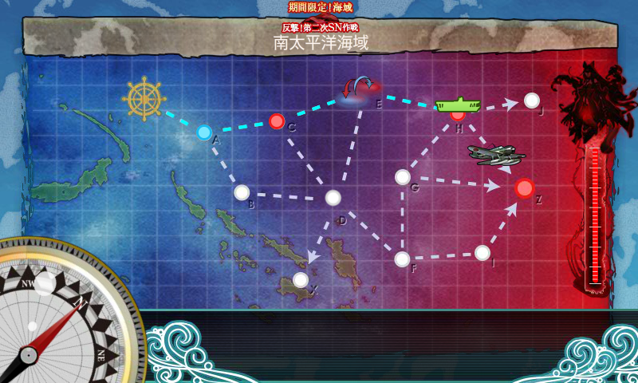
上ルート（A → C → E → H → Z）のみで8回出撃クリア。
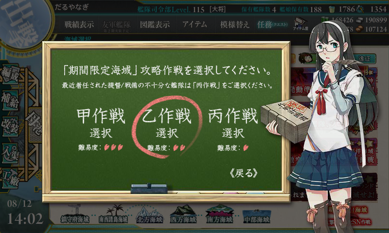
ただし、難易度は「丙！提督ぅ～」（CV：金剛）で。
編成
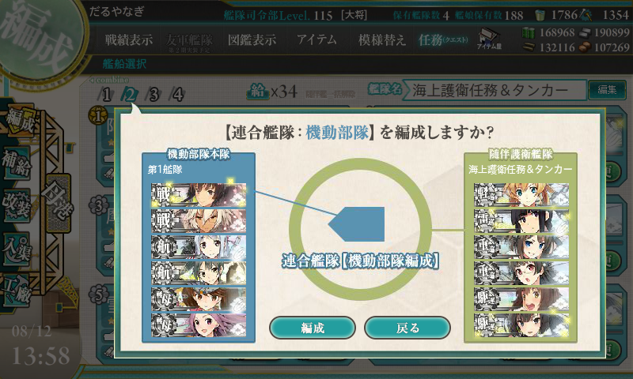
このステージは連合艦隊マップで、【水上部隊】と【機動部隊】が選べる。今回は【機動部隊】を選択。序盤の山場らしいので、一軍を惜しみなく投入。
第一艦隊
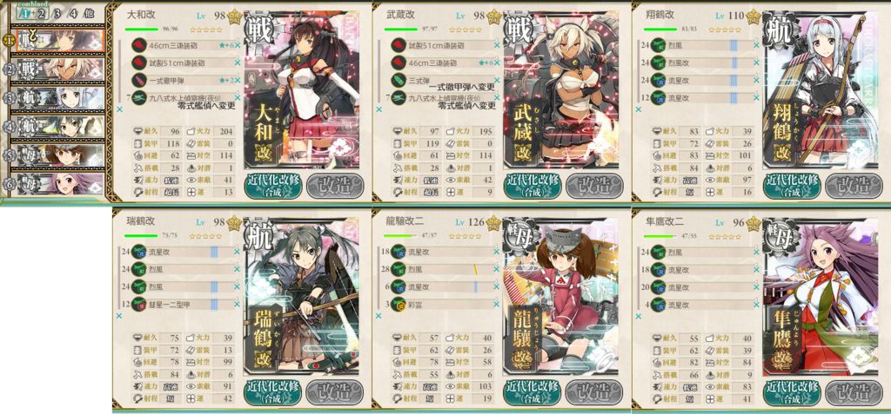
戦艦2＋正規空母2＋軽空母2に（軽空母2というのがルート制御に重要なのかな？ いきなりこれでうまくいったので、ほかを試してないが）、適当な初期装備を載せる。これで制空値は 263 ぐらいになるらしいが、道中困ることはなかった。最初、誤って和姉妹に夜偵を積んでいたのを零観にした。加えて、ラストアタックで「武蔵」の三式弾を一式徹甲弾に換装（後述）。
第二艦隊
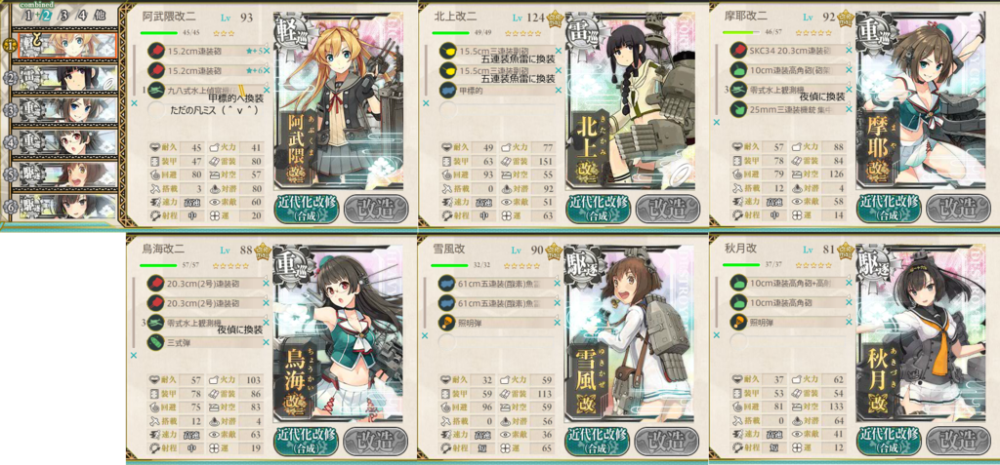
軽巡1＋雷巡1＋重巡2＋駆逐1の基本セットに、連撃装備と夜戦道具（夜偵2機＋照明弾2個）を搭載。
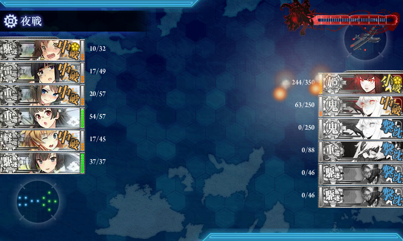
軽巡は甲標的を載せて先制雷撃ができる「阿武隈」を採用。雷巡「北上」と二人で開幕で敵をなるべく減らす。
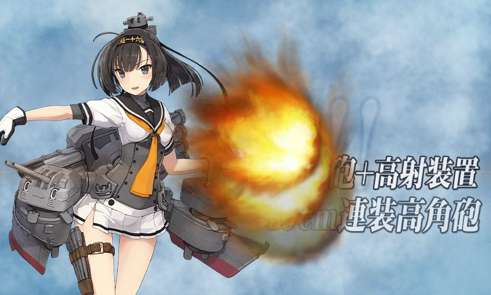
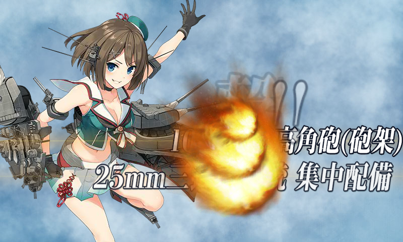
「摩耶」「秋月」は対空カットイン要員。二人いるとかなり安定してカットインが発生する感じ。
残りの駆逐枠は頼りになる「雪風」さん。重巡の相方はなんでもいいかとおもったので、「摩耶」に合わせて「鳥海」を入れた。
艦隊の並び順はあんまり考えてなかったが、途中で「雪風」を旗艦に。難易度甲だったらもう少し練ったかもしれないが、乙だったのでこれでもだいたいいけた。
戦闘経過
すべてボスまで到達。
- A → C → E → H → Z（ボス撃破1回目）
- ボスS勝利 ドロップ「龍驤」
- A → C → E → H → Z（ボス撃破2回目）
- ボスS勝利 ドロップ「舞風」
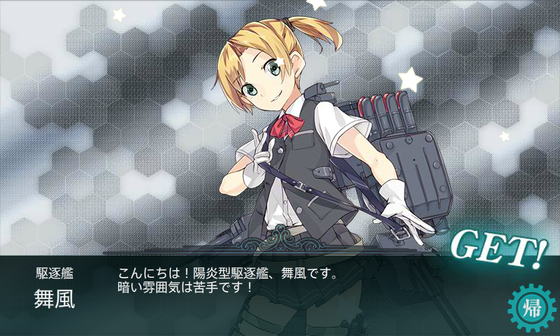
- ボスS勝利 ドロップ「舞風」
- A → C → E → H → Z（ボス撃破、打ち漏らし）
- 基本的に決戦支援は要らないが、ボスで反航戦だと打ち漏らしがあるかもしれない（震え声
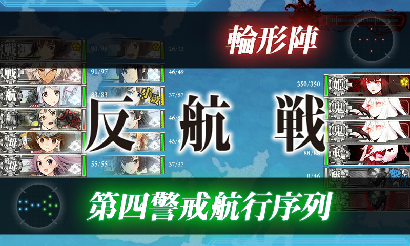 - ボスA勝利 ドロップ
たまご焼き「瑞鳳」
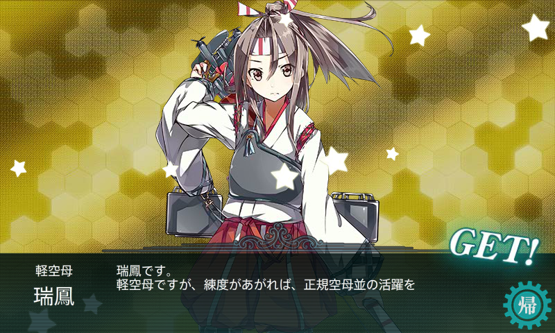
- 基本的に決戦支援は要らないが、ボスで反航戦だと打ち漏らしがあるかもしれない（震え声
- A → C → E → H → Z（ボス撃破3回目）
- ボスS勝利 ドロップ「北上」
- A → C → E → H → Z（ボス撃破4回目）
- ボスS勝利 ドロップ「高雄」
- A → C → E → H → Z（ボス撃破5回目、以後ラストアタック）
- この回から決戦支援艦隊（戦艦2＋正規空母2＋駆逐2）を導入してみた。駆逐艦の一掃はできそう
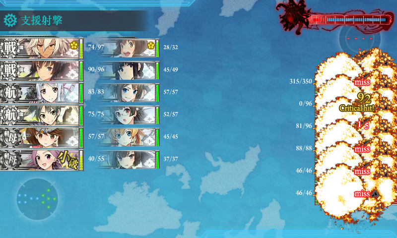 - ボスS勝利 ドロップ「最上」
- この回から決戦支援艦隊（戦艦2＋正規空母2＋駆逐2）を導入してみた。駆逐艦の一掃はできそう
- A → C → E → H → Z（ボス撃破、打ち漏らし）
- 最終形態。難易度甲ではこの編成が通常らしい。決戦支援なしでは無理だな（白目
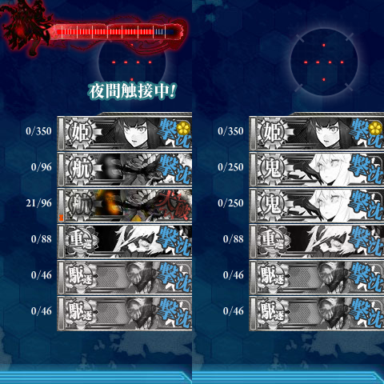 - 痛恨の打ち漏らし。「武蔵」を徹甲弾に、「北上」を魚雷カットイン装備に
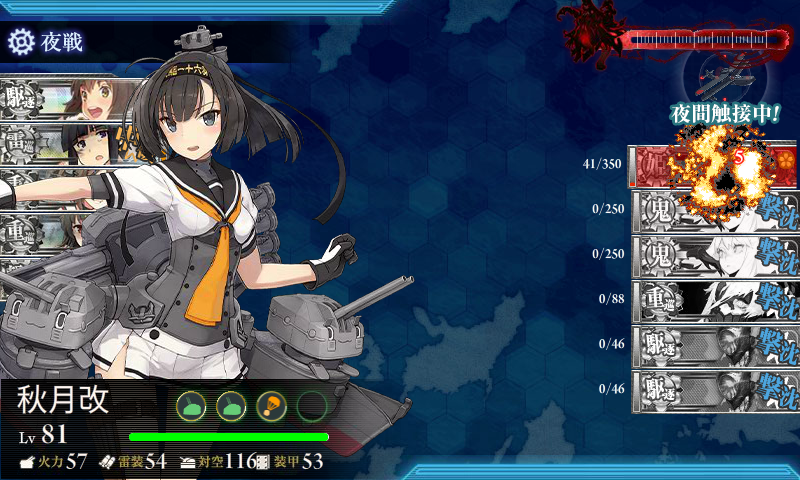 - ボスA勝利 ドロップ「北上」
- 最終形態。難易度甲ではこの編成が通常らしい。決戦支援なしでは無理だな（白目
- A → C → E → H → Z（ボス撃破6回目）
- 中破三艦も出してて（過去最悪）撃破が危ぶまれたが……
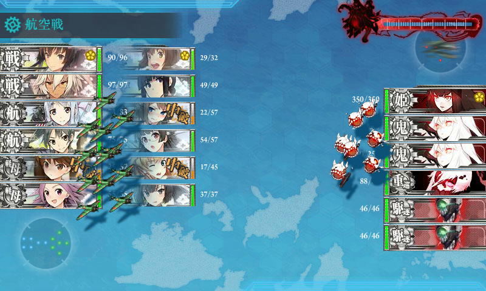 - 装備見直しの甲斐もあって「鳥海」さんがボスを撃破。
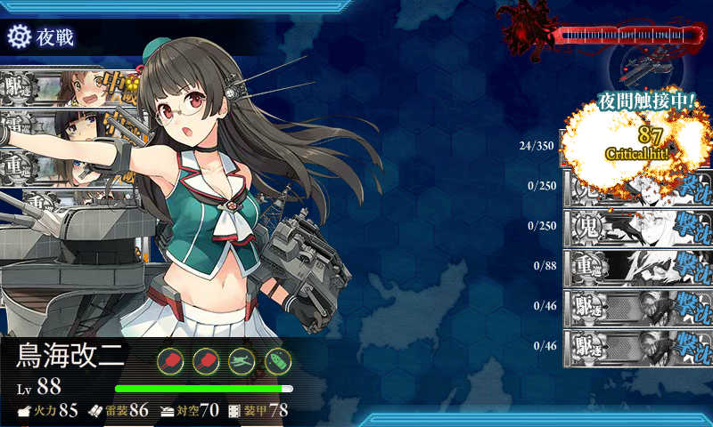 - ボスS勝利 ドロップ「夕雲」
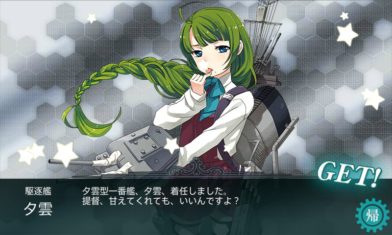
- 中破三艦も出してて（過去最悪）撃破が危ぶまれたが……
結果論だけど、甲でもクリアそのものは不可能ではないと思う。ただ、レア艦掘りのことを考えると、決戦支援艦隊が要らない乙じゃないとやる気になれない感じ。
追記
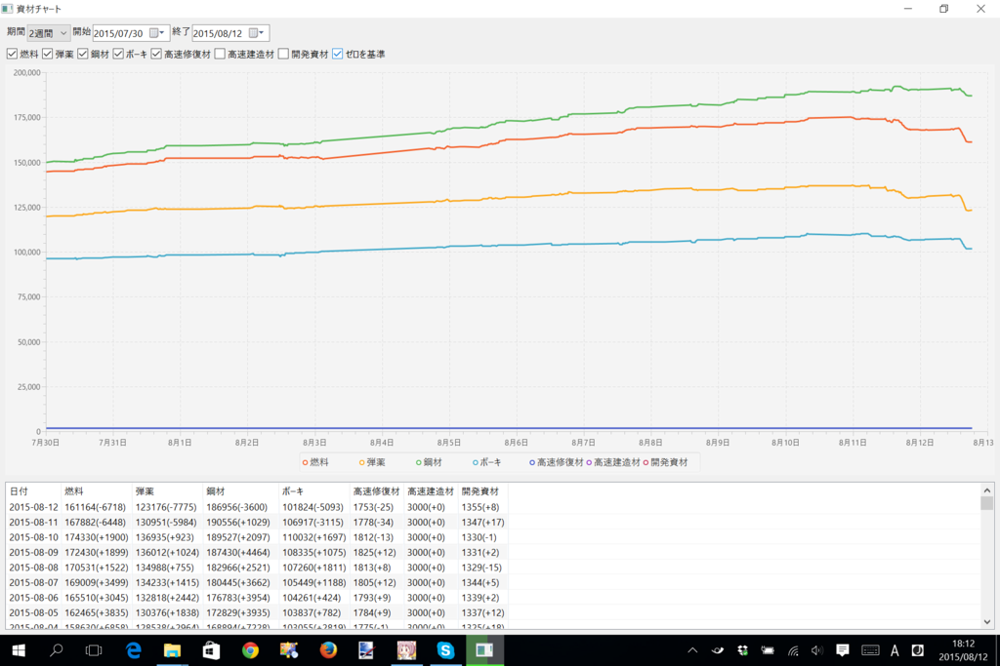
遠征による増減もあるが――
| 燃料 | 弾薬 | 鋼材 | ボーキサイト | 高速修復剤 | ||
| 2015-08-10 | E1 | +1900 | +923 | +2097 | +1697 | -13 |
| 2015-08-11 | E2 | -6448 | -5984 | +1029 | -3115 | -34 |
| 2015-08-12 | E3 | -6718 | -7775 | -3600 | -5093 | -25 |
修復剤を少し無駄遣いしてるかもしれない（疲労を抜くためにも使ってる）。あと、弾薬が薄いので、燃料・弾薬重視に遠征を切り替えようっと（忘れてた